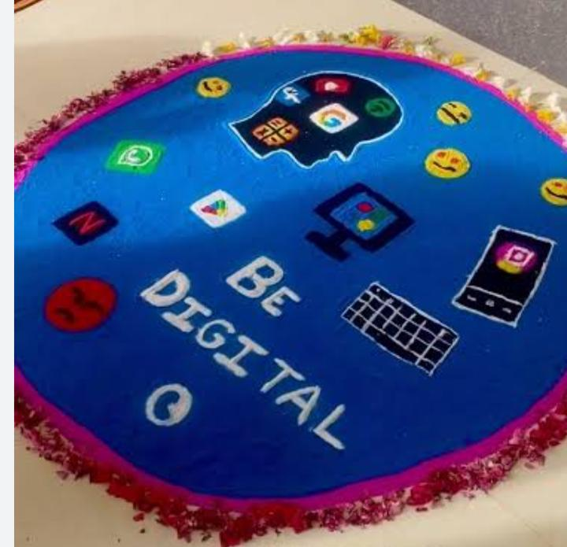
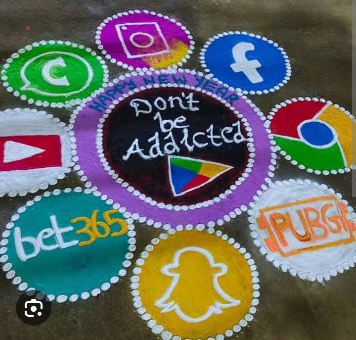
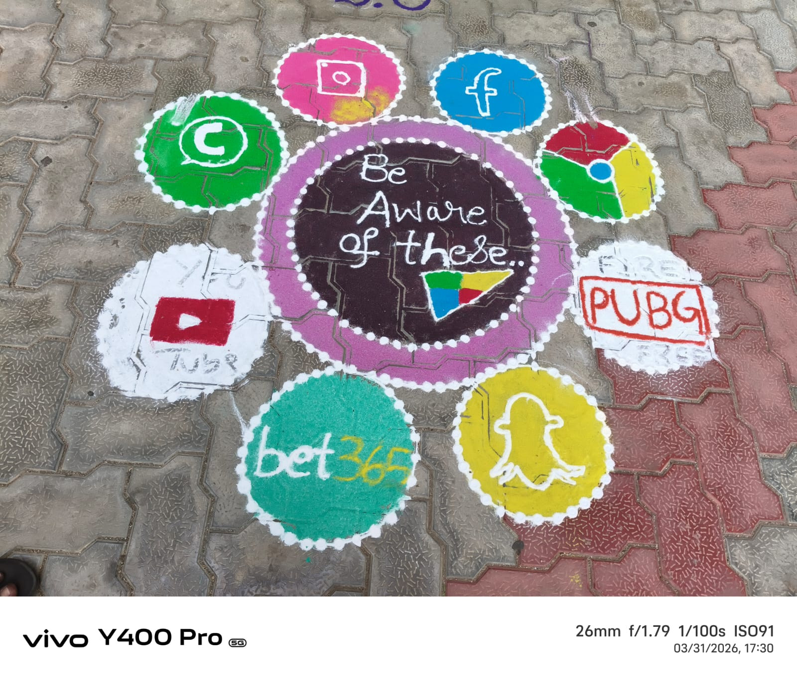

04 // THE ARCHIVE
FEST GALLERY
Throwback to Technotsav 2.0 – the stage, the guests, the crowd and the creativity. Tap any photo to zoom.





LAST YEAR // TECHNOTSAV 2.0
04 // THE ARCHIVE
Throwback to Technotsav 2.0 – the stage, the guests, the crowd and the creativity. Tap any photo to zoom.



LAST YEAR // TECHNOTSAV 2.0